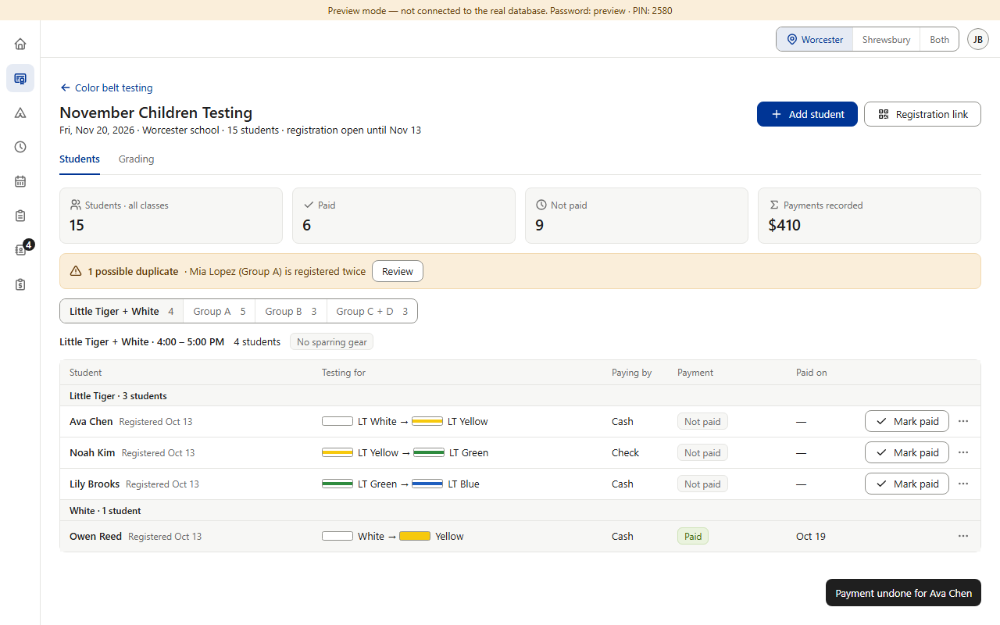
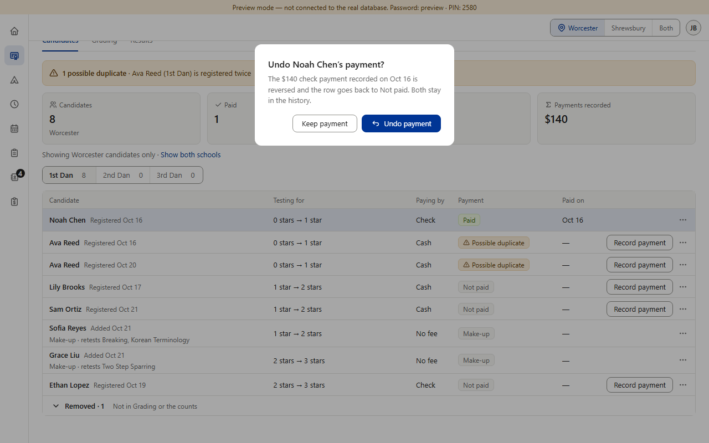
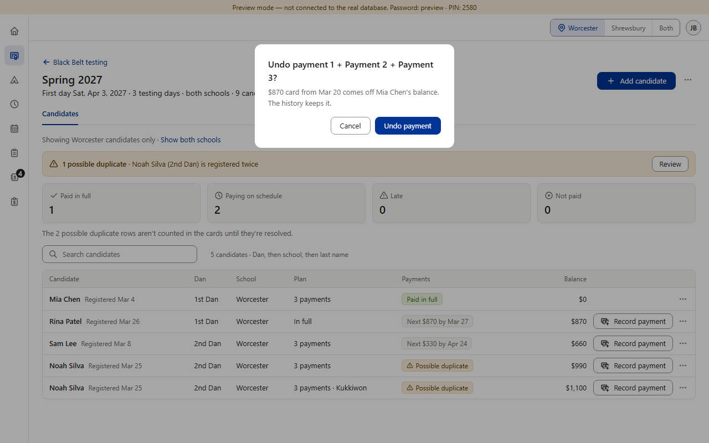
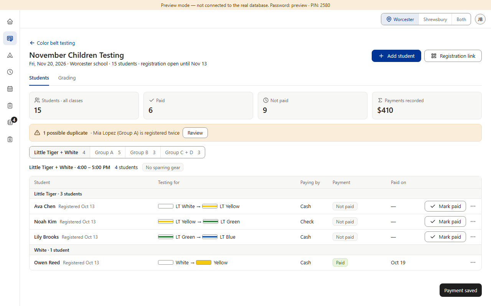
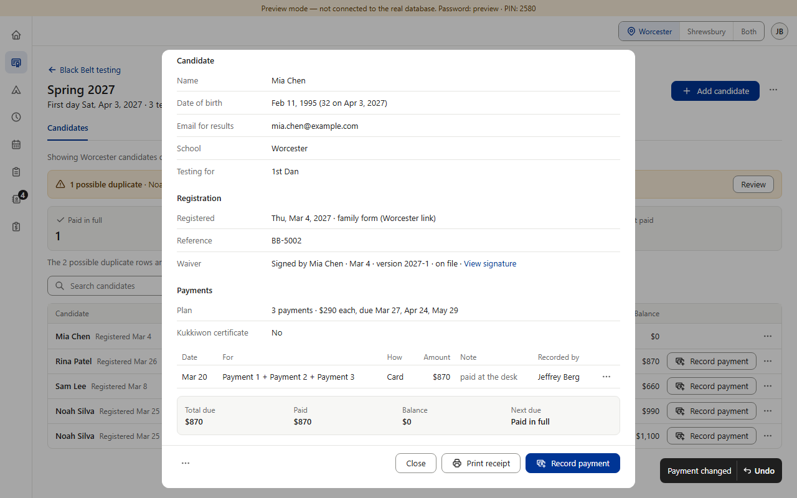
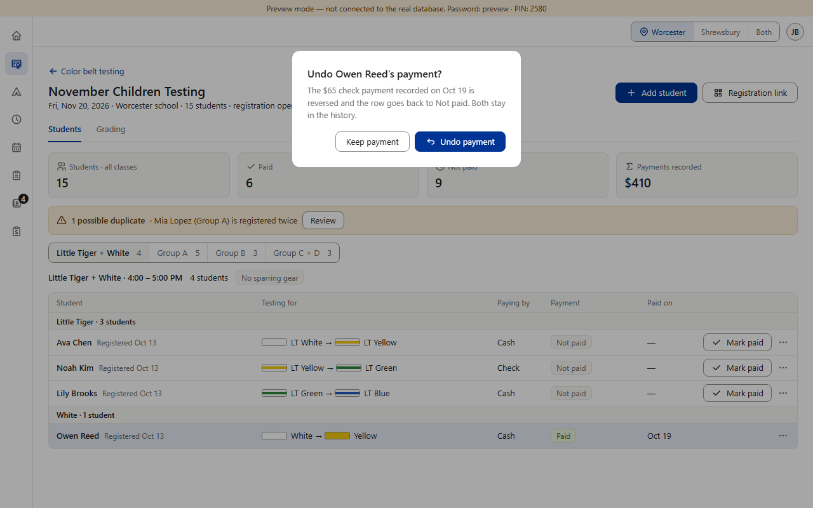

Today






Proposed (option B) · one rule, copied from Star and Black Belt

Not part of this question — stays as approved: refunds (Color Belt has none because fees aren't refundable, v0.132; Camps uses Edit payment, v0.700; Star and Black Belt have “Record refund”). Black Belt's Edit payment also asks a “Reason for the change”; the others don't — that can come up later. Picture 7 is drawn over Color Belt's real confirm box; nothing in the app was changed.